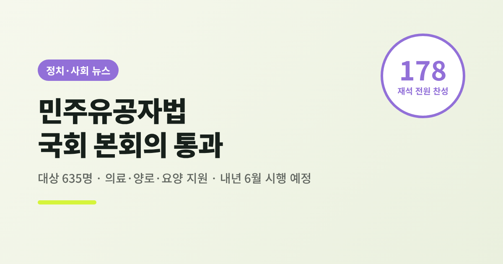
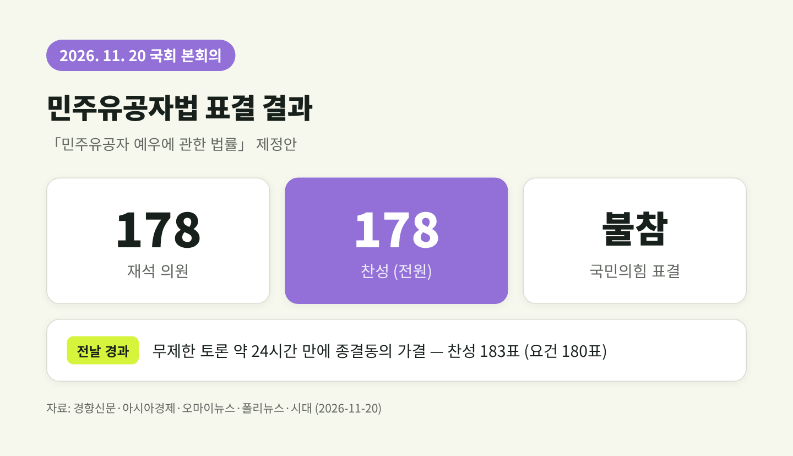
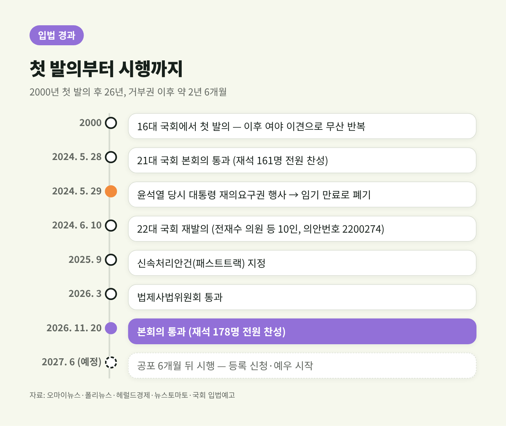
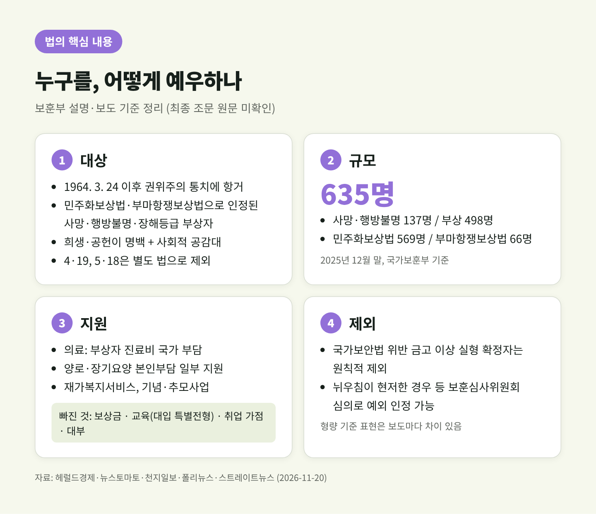
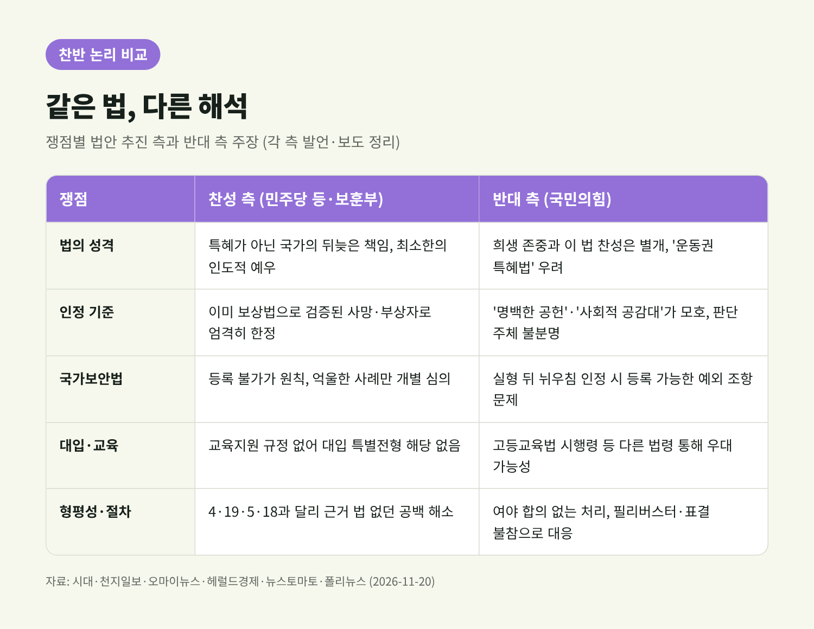
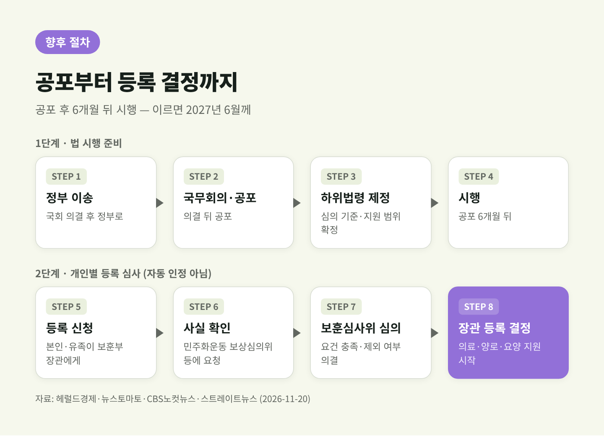

민주유공자법 국회 본회의 통과, 대상·예우 내용과 남은 쟁점

이번 글에서는 11월 20일 국회 본회의를 통과한 민주유공자법을 정리합니다. 표결 결과와 법의 실제 내용, 찬성과 반대 양측의 논리, 시행까지 남은 절차를 차례로 짚어 보겠습니다.
세 줄 요약
- 「민주유공자 예우에 관한 법률」 제정안이 재석 178명 전원 찬성으로 가결됐습니다. 국민의힘은 표결에 참여하지 않았습니다.
- 민주화운동 과정에서 숨지거나 행방불명되거나 장해를 입은 사람 중 심사를 통과한 이들을 국가가 예우합니다. 보훈부 추산 대상은 635명입니다.
- 공포 후 6개월 뒤, 이르면 내년(2027년) 6월께 시행됩니다. 인정 기준과 국가보안법 위반자 예외 조항을 둘러싼 논쟁은 이어지고 있습니다.
■ 무슨 일이 있었나: 재석 178명 전원 찬성
국회는 11월 20일 본회의에서 「민주유공자 예우에 관한 법률」 제정안을 의결했습니다. 재석 의원 178명이 모두 찬성했습니다.
더불어민주당이 처리를 주도했고 조국혁신당 등 범여권이 함께했습니다. 국민의힘은 표결에 참여하지 않았습니다. 전날 시작된 국민의힘의 무제한 토론은 약 24시간 만에 종결동의(찬성 183표)로 끝났고, 표결은 그 직후 진행됐습니다.
본회의장 방청석에는 전국민족민주유가족협의회(유가협) 회원들이 자리했습니다. 유가협은 2021년 10월부터 국회 앞 천막농성을, 11월 10일부터는 본청 정문 앞 노숙농성을 이어왔습니다. 조정식 국회의장은 표결 뒤 "오늘의 결정이 그 긴 세월에 작은 위로가 되길 바란다"고 말했습니다(스트레이트뉴스 보도).

■ 왜 중요한가: 26년 만의 입법, 2년 전과 달라진 지점
이 법은 2000년 16대 국회에서 처음 발의됐습니다. 이후 여야 이견으로 번번이 무산되다 26년 만에 국회 문턱을 넘었습니다.
가장 가까운 시도는 2024년이었습니다. 그해 5월 28일 당시 야당이던 민주당 주도로 본회의를 통과했지만(재석 161명 전원 찬성), 다음 날 윤석열 당시 대통령이 재의요구권을 행사했습니다. 21대 국회 임기 마지막 날이었고, 법안은 그대로 폐기됐습니다. 정부가 밝힌 사유는 결정 기준이 구체적이지 않아 사회적 논란이 있는 사건의 관련자까지 등록될 수 있다는 것이었습니다.
22대 국회에서는 2024년 6월 전재수 의원 등 10인이 다시 발의했습니다(의안번호 2200274). 2025년 9월 신속처리안건으로 지정됐고, 2026년 3월 법제사법위원회를 거쳐 이번에 본회의를 통과했습니다.
2년 전에는 국가보훈부도 선정 기준과 심사 절차가 불명확하다며 반대했습니다. 이번에는 통과 직후 보훈부가 "후속 조치에 만전을 기하겠다"는 입장을 냈습니다. 같은 성격의 법안을 두고 주무 부처의 입장이 2년 사이 달라진 셈입니다.

■ 법의 핵심 내용: 누구를, 어떻게 예우하나
대상 범위. 1964년 3월 24일 이후 권위주의 통치에 항거해 자유민주적 기본질서 확립에 기여한 사람이 출발점입니다. 다만 실제 대상은 더 좁습니다. 기존 민주화보상법이나 부마민주항쟁보상법으로 이미 인정된 사망자·행방불명자·장해등급 부상자 가운데, 희생이나 공헌이 명백히 인정되고 사회적 공감대가 형성된 사람과 그 유족·가족입니다. 4·19혁명과 5·18민주화운동은 별도 법으로 예우하고 있어 이 법의 대상이 아닙니다. 유죄판결·해직·학사징계 등 명예회복 대상자도 빠집니다.
대상 규모. 보훈부 기준(2025년 12월 말) 635명입니다. 사망·행방불명 137명, 장해등급 부상자 498명이며, 근거 법별로는 민주화보상법 569명, 부마민주항쟁보상법 66명입니다. 유신반대투쟁, 부마민주항쟁, 6월민주항쟁 관련자가 여기에 해당합니다. 그동안 국가유공자 예우를 받지 못했던 박종철·이한열 열사도 심사를 거쳐 등록될 길이 열렸습니다.
지원 내용. 지원은 의료·양로·요양으로 한정됩니다. 부상자 진료비는 국가가 부담하고, 배우자와 선순위 유족 1명은 보훈병원 진료비를 감면받습니다. 부양할 사람이 없는 고령 유공자는 국가 양로시설을 이용할 수 있고, 장기요양 본인부담금 일부와 재가복지서비스도 지원됩니다. 국가와 지방자치단체가 기념·추모사업을 하고 관련 시설을 둘 근거도 생깁니다.
눈여겨볼 것은 빠진 항목입니다. 보상금, 자녀 교육지원(수업료 면제·대입 특별전형), 취업 가점, 대부 지원은 상임위 심사 과정에서 삭제됐습니다. 2020년 우원식 의원안에 있던 자녀 대입 특별전형과 공공기관 취업 가산점도 수정 과정에서 제외됐습니다.
제외 요건. 국가보안법 위반으로 금고 이상의 실형이 확정된 사람은 원칙적으로 대상에서 빠집니다(천지일보·뉴스토마토·스트레이트뉴스 보도). 다만 "뉘우친 정도가 현저하다고 인정되는 경우 등"에는 보훈심사위원회 심의를 거쳐 예외적으로 인정받을 수 있습니다. 경향신문은 제외 기준을 '국가보안법 위반 1년 이상 징역형, 내란·살인·성폭력 등 유죄 확정'으로 보도해 형량 기준 표현에 차이가 있습니다. 통과된 최종 조문 원문은 이 글에서 직접 확인하지 못했습니다.

■ 찬성 측 논리: "특혜가 아니라 국가의 뒤늦은 책임"
법안을 추진한 쪽의 출발점은 형평성입니다. 4·19와 5·18 관련자는 유공자로 예우받는데, 유신반대·부마항쟁·6월항쟁 희생자는 근거 법이 없었다는 것입니다. 국가폭력에 맞서 희생한 이들에게 최소한의 예우를 하는 것은 국가의 책무라는 주장입니다.
대상이 좁다는 점도 강조합니다. 민주당은 이미 보상법 심사로 검증된 사망·부상자로 범위를 엄격히 한정했고, 교육·취업·대부 지원을 모두 뺀 "최소한의 인도적 예우법"이라고 설명합니다. 허영 의원은 특혜를 주는 법이 아니라 국가가 뒤늦게 책임을 지는 법이라고 했습니다.
대입 특혜 논란에는 보훈부가 직접 답했습니다. 권오을 장관은 "대입 특별전형 혜택 등 일체의 교육지원은 포함돼 있지 않다"고 밝혔습니다. 대학입학전형기본사항상 특별전형 자격은 '국가보훈 관계 법령에 따른 교육지원 대상자'인데, 이 법에는 교육지원 규정이 없다는 설명입니다. 국가보안법 조항에 대해서도 권 장관은 "등록할 수 없는 것이 원칙"이라고 했습니다. 용혜인 기본소득당 의원은 문제 된 조항이 기존 국가유공자법 구조를 가져온 것이지 새 특례가 아니라고 반박했습니다.
■ 반대 측 논리: "기준이 모호하면 공정성이 흔들린다"
국민의힘의 핵심 문제 제기는 인정 기준입니다. '희생·공헌이 명백히 인정'되고 '사회적 공감대가 형성'됐다는 요건이 추상적이어서, 논란이 있는 사건의 관련자까지 국가유공자에 준하는 예우를 받을 수 있다는 것입니다. 이 때문에 국민의힘은 이 법을 '운동권 특혜법'이라고 불러 왔습니다.
필리버스터에 나선 서일준 의원은 "민주화 운동의 희생을 존중하는 것과 현재의 민주유공자법에 찬성하는 것은 다른 의미"라고 했습니다. 누구에게 어떤 공헌을 인정할지에 대한 권한과 기준이 명확해야 한다는 주장입니다. 최은석 의원은 누가 '명백히 인정'하는지 규정이 없다고 지적했습니다.
국가보안법 예외 조항도 쟁점입니다. 윤용근 의원은 실형 확정 뒤 일정 기간이 지나 뉘우침이 인정되면 등록될 수 있는 구조를 비판했습니다. 대입 문제에서도 시각이 다릅니다. 정점식 원내대표는 고등교육법 시행령에 따라 유공자 자녀가 특별전형 혜택을 받을 수 있다고 주장했습니다. 국가보훈대상자가 사회통합전형 등에 포함되는 만큼, 법 밖의 다른 법령에서 우대가 생길 수 있다는 논리입니다. 절차 면에서도 여야 합의 없이 처리됐다며 필리버스터와 표결 불참으로 대응했습니다.

■ 숫자를 둘러싼 엇갈림: 635명인가, 4,537명인가
수혜 규모도 해석이 갈립니다. 보훈부가 제시한 635명은 2025년 말 기준 등록 대상 본인 수입니다. 반면 2024년 8월 작성된 국회 비용추계서는 유공자 본인 926명과 유족·가족 3,611명 등 총 4,537명을 혜택 대상으로 잡았습니다. 추계 시점이 다르고, 본인만 셀지 유족까지 셀지에 따라 숫자가 달라지는 구조입니다.
재정 부담은 상대적으로 작게 추산됐습니다. 국회예산정책처는 2026년부터 5년간 추가 재정을 101억7,900만 원, 연평균 약 20억 원으로 봤습니다.
대입 문제 역시 실제로는 대학별 모집요강에 따라 갈립니다. 연세대는 2027학년도 수시 국가보훈대상자 전형 지원 자격을 보훈 관계법상 '교육지원 대상자'로 한정했다고 보도됐습니다. 다른 대학들이 어떤 기준을 적용할지는 아직 확인되지 않았습니다.
■ 앞으로의 절차: 공포, 시행령, 그리고 보훈부 심사
법안은 정부로 이송돼 국무회의 의결을 거쳐 공포됩니다. 시행은 공포 6개월 뒤로, 이르면 내년 6월께 등록 신청과 예우가 시작됩니다.
등록은 자동이 아닙니다. 신청을 받으면 보훈부가 민주화운동 보상심의위원회 등에 사실 확인을 요청하고, 보훈심사위원회가 심의·의결한 뒤 장관이 등록 여부를 결정합니다. 거짓이나 부정한 방법으로 예우를 받으면 처벌하는 규정도 들어갔습니다.

실제 운용을 좌우할 부분은 6개월 안에 만들어질 하위법령입니다. '명백한 공헌'과 '사회적 공감대'를 어떤 기준으로 판단할지, 국가보안법 예외 심의를 어떻게 운용할지가 시행령과 심사 기준에서 구체화됩니다. 권 장관은 기준이 모호하다는 지적에 하위법령을 서둘러 마련하겠다고 답했습니다.
보훈부는 후속 조치도 예고했습니다. 이천 민주화운동기념공원, 광주 5·18 구묘역, 남양주 마석모란공원 민주화열사묘역 등을 국가관리묘역으로 지정하는 방안, 유가협 등과의 공법단체 설립, 기념시설 지정·관리 근거 마련이 검토 대상입니다.
남은 변수도 있습니다. 한병도 민주당 원내대표는 "법안의 내용을 더 많이 채워서" 명예회복을 이어가겠다고 했습니다. 반면 국민의힘은 기준과 특혜 우려를 계속 제기하고 있습니다. 지원 범위를 넓히려는 개정 시도와 이를 견제하는 움직임이 맞부딪힐 가능성이 있습니다.
정리하면 이렇습니다. 예전에는 '예우할 근거가 없다'는 것이 문제였고, 이제는 '누구를 어떤 기준으로 예우하느냐'가 문제로 남았습니다. 양측 모두 민주화운동의 희생 자체를 부정하지는 않습니다. 갈리는 지점은 그 희생을 제도로 옮기는 방식입니다.
결국 이 법의 평가는 본회의 표결이 아니라 내년 6월 이후 첫 등록 결정들에서 내려질 것입니다.
참고자료
- 경향신문 — 민주유공자법, 여당 주도 국회 본회의 통과 (2026-11-20)
- 아시아경제 — 민주유공자법 국회 본회의 통과…與 주도 처리 (2026-11-20)
- 오마이뉴스 — 국힘 표결 불참 속 '민주유공자법', 26년 만에 국회 통과 (2026-11-20)
- 폴리뉴스 — 尹거부권에 막혔던 '민주유공자법', 2년여 만에 국회 통과 (2026-11-20)
- 헤럴드경제 — 민주유공자법, 26년 만에 국회 통과…권오을 "국보법 위반자 등록 불가 원칙" (2026-11-20)
- 뉴스토마토 — 민주유공자법 26년 만에 국회 통과…내년 6월 시행 (2026-11-20)
- CBS노컷뉴스 — 보훈부 "26년만의 민주유공자법 통과, 후속 조치에 만전" (2026-11-20)
- 천지일보 — 민주유공자법, 범여권 주도 본회의 통과… 논란은 현재진행형 (2026-11-20)
- 동행미디어 시대 — 민주유공자법 국회 통과…국힘 '유공자 기준 모호' 반발 (2026-11-20)
- 스트레이트뉴스 — 민주유공자법 국회 통과…박종철·이한열 열사도 예우 길 열려 (2026-11-20)
- 국회 입법예고 — 민주유공자 예우에 관한 법률안(의안번호 2200274, 2024-06-10 발의)
- 경향신문 — 계속되는 거부권 악순환 (2024-05-29)